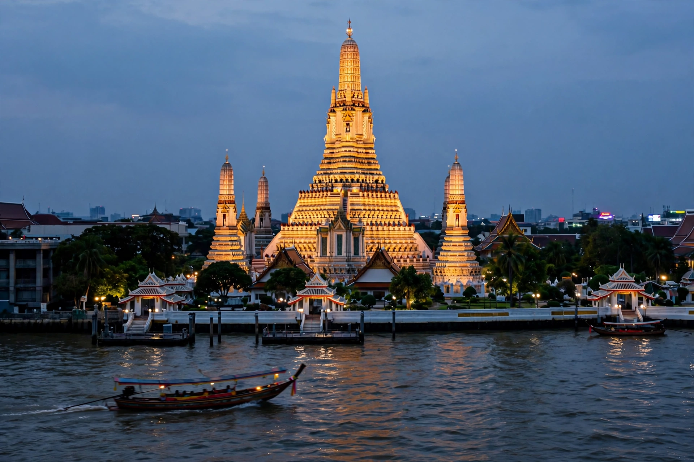

Bangkok
Bangkok is the capital of Thailand, known for its ornate temples, canals, street food and nightlife. Wikivoyage's guide is divided into districts — including Siam Square, Sukhumvit, Silom, Chinatown (Yaowarat), the Old City (Rattanakosin) with the Grand Palace and Wat Pho, and backpacker-centred Khao San Road.

[Image: Wat Arun temple across the Chao Phraya river at dusk]
See
The Grand Palace and Wat Phra Kaew, Wat Pho's reclining Buddha, Wat Arun across the river, and the Chatuchak Weekend Market top most lists.
Practicalities
The BTS Skytrain, MRT and river boats are the fastest ways across the city's traffic; the guide covers scams, heat, and etiquette at temples.